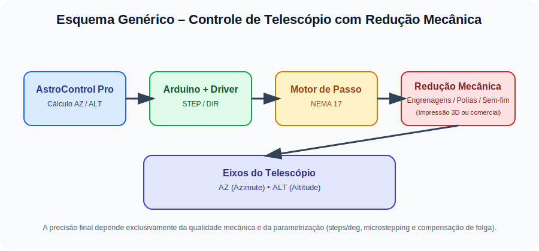

1. Arquitetura do Sistema
O sistema é dividido em três camadas principais que trabalham em sincronia:
Camada de Cálculo
Python + Skyfield (JPL/NASA) processam efemérides e coordenadas Alt-Az em tempo real.
Comunicação
Protocolo Híbrido (ASCII para comandos simples e Binário para Tracking de alta precisão).
Atuação
Arduino Uno + Drivers A4988 controlam motores NEMA 17 com micro-stepping.
O AstroControl Pro é independente do modelo de telescópio. Ele pode ser utilizado em qualquer montagem Alt-Az (dobsoniana, fork, customizada, artesanal ou comercial), desde que os eixos de Azimute (AZ) e Altitude (ALT) sejam movimentados por motores de passo acoplados por redução mecânica (engrenagens, polias ou sem-fim).
2. Hardware e Conexões
Esquema de Ligação (Wokwi v1)
Eixo Azimute (AZ):
- Step Pin: Arduino D2
- Dir Pin: Arduino D3
Eixo Altitude (ALT):
- Step Pin: Arduino D4
- Dir Pin: Arduino D5
2.1 Requisitos Mecânicos do Sistema
O AstroControl Pro não aciona o telescópio diretamente. É obrigatório o uso de um sistema de redução mecânica entre o motor de passo e cada eixo do telescópio.
Conectar o motor diretamente ao eixo do telescópio não fornece torque nem resolução suficientes para rastreio astronômico preciso.
O que é necessário em cada eixo (AZ e ALT):
- ✔ 1 motor de passo (ex: NEMA 17)
- ✔ 1 sistema de redução mecânica (obrigatório)
- ✔ Fixação rígida e sem flexão estrutural
- ✔ Controle de folga (backlash)
Tipos de Redução Mecânica Compatíveis
O software é compatível com qualquer tipo de redução, desde que o movimento final seja previsível e repetível.
- Impressão 3D (PLA, PETG, ABS)
- Engrenagens comerciais
- Relação típica: 1:20 até 1:200
- GT2 / HTD
- Baixo ruído
- Fácil ajuste de tensão
- Ideal para tracking
- Alta redução
- Folga deve ser bem ajustada
Parametrização para Diferentes Telescópios
A adaptação para qualquer telescópio é feita exclusivamente pelo ajuste dos parâmetros abaixo no firmware Arduino:
Esses valores variam conforme: motor, microstepping, relação de engrenagens e qualidade mecânica do conjunto.
Esquema Mecânico do Sistema
3. Protocolo de Dados
O software envia dois tipos de frames para o Arduino:
A. Comandos ASCII (GOTO/ZERO/STOP)
ZERO\n // Reseta encoders internos
STOP\n // Interrompe qualquer movimento
B. Frame Binário de Tracking (Alta Precisão)
Enviado a cada 100ms para manter o movimento suave (Sidereal Tracking):
| Byte 0 | Byte 1 | Bytes 2-5 | Bytes 6-9 | Byte 10 | Byte 11 |
|---|---|---|---|---|---|
| 0x02 (STX) | 'T' (ASCII) | VAZ (Int32) | VALT (Int32) | Checksum | 0x03 (ETX) |
*VAZ/VALT são velocidades angulares multiplicadas por 1000 para evitar pontos flutuantes no Arduino.
4. Guia de Operação
- Ligue o Arduino e conecte o Bluetooth no PC.
- No AstroControl, clique em Atualizar e selecione a porta COM.
- Insira sua Latitude/Longitude real para cálculos precisos da NASA.
- Selecione um alvo (ex: Júpiter) e clique em GOTO.
- Ative o TRACK ON para compensar a rotação da Terra.
4.1 Primeira Utilização (Fluxo Recomendado)
Este fluxo evita erros comuns de alinhamento, perda de referência e tracking impreciso. Recomenda-se seguir a ordem abaixo sempre que o sistema for ligado.
-
1️⃣ Montagem Mecânica
Garanta que o telescópio possua:- Redução mecânica instalada nos eixos AZ e ALT
- Eixos livres, sem travamentos ou flexão
-
2️⃣ Inicialização do Hardware
Ligue o Arduino e conecte via Bluetooth ou USB. -
3️⃣ Conexão no AstroControl
Clique em Atualizar, selecione a porta correta e clique em Conectar. -
4️⃣ Configuração da Localização
Informe:- Latitude
- Longitude
- Altitude
-
5️⃣ Definição do ZERO Mecânico
Posicione o telescópio manualmente apontando aproximadamente para:- Norte geográfico
- Altitude próxima de 0°
-
6️⃣ Movimento GOTO
Selecione um alvo e clique em GOTO. -
7️⃣ Rastreamento
Após o objeto estar centralizado, ative TRACK ON.
4.2 Problemas Comuns
🔴 O telescópio não acompanha o objeto
✔ Verifique se o TRACK ON está ativado
✔ Confirme se a redução mecânica é suficiente
🔴 O GOTO erra muito a posição
✔ Confira latitude e longitude
✔ Ajuste passos por grau e backlash
🔴 Movimento tremido ou instável
✔ Reduza o microstepping
✔ Aumente a redução mecânica
✔ Verifique folgas estruturais
4.3 Limitações Conhecidas do Sistema
O AstroControl Pro foi projetado para ser um sistema de rastreamento simples, genérico e acessível. Algumas limitações são inerentes à escolha da montagem Alt-Az e ao foco em controle por motores de passo sem encoders absolutos.
* A IDEIA É NÃO DEPENDER DE SENSORES OU HARDWARE COMPLEXO, APENAS MATEMÁTICA DE PRECISÃO.
❌ Limitações Técnicas
-
Rotação de campo:
Montagens Alt-Az não compensam a rotação do campo celeste. O AstroControl não corrige rotação de campo. -
Astrofotografia de longa exposição:
Não recomendado para exposições longas (acima de alguns segundos), especialmente em céu profundo. -
Dependência mecânica:
Precisão final depende diretamente da qualidade da redução mecânica, rigidez estrutural e controle de folga. -
Sem encoders absolutos:
O sistema assume que os motores não perdem passos. Colisões ou travamentos podem causar perda de referência.
✔ Onde o Sistema se Destaca
-
Observação visual:
Excelente para observação visual de planetas, Lua, Sol (com filtro apropriado) e objetos brilhantes. -
Planetária e vídeo:
Ideal para captura planetária por vídeo (lucky imaging) e empilhamento. -
Objetos acima do horizonte:
Funciona melhor com objetos acima de 20° a 25° de altitude, onde a refração atmosférica e erros mecânicos são menores. -
Projetos DIY e educacionais:
Ótimo para aprendizado de astronomia, mecânica, eletrônica e controle de movimento.
Para aplicações avançadas de astrofotografia, recomenda-se montagens equatoriais ou sistemas Alt-Az com correção ativa de rotação de campo e encoders de alta resolução.
5. Como o AstroControl Calcula o Movimento
O AstroControl Pro converte a posição real dos astros no céu em movimentos mecânicos precisos nos eixos do telescópio. Todo o cálculo é feito em tempo real no computador.
Dados JPL/NASA (Skyfield)
RA/DEC → Alt-Az
°/s → passos/s
Motores de passo
O software calcula a posição dos astros utilizando efemérides de alta precisão da NASA (JPL), considerando:
- Latitude, longitude e altitude do observador
- Data e hora exatas (UTC)
- Refração atmosférica opcional
A partir disso, as coordenadas equatoriais (RA/DEC) são convertidas para coordenadas locais Altitude (ALT) e Azimute (AZ).
Após calcular ALT e AZ, o software converte ângulo em movimento mecânico:
Esses valores são enviados ao Arduino no modo Tracking, atualizados a cada 100 ms, garantindo movimento suave e contínuo.
O AstroControl não move o telescópio em saltos. Ele ajusta constantemente a velocidade dos motores para compensar a rotação da Terra em tempo real.
6. Arquivos do Projeto
AstroControl Pro 3.0.py
Interface PyQt6 & Cálculos Skyfield
tracker.ino
Firmware de Controle de Motores
Download do AstroControl
Versão estável v3.0 (Windows x64)
⬇️ Baixar Executável (.exe)Nota: Alguns antivírus podem alertar sobre o arquivo por ser um executável Python não assinado digitalmente.
Requisitos Mínimos
- SO: Windows 10 ou 11 (64-bit)
- Hardware: Bluetooth 4.0+ ou Cabo USB (Serial)
- Arduino: Uno R3 ou compatível (Atmega328P)
- Alimentação: Fonte externa 12V 2A para os motores NEMA
- Espaço: 150MB livre (incluindo efemérides JPL)